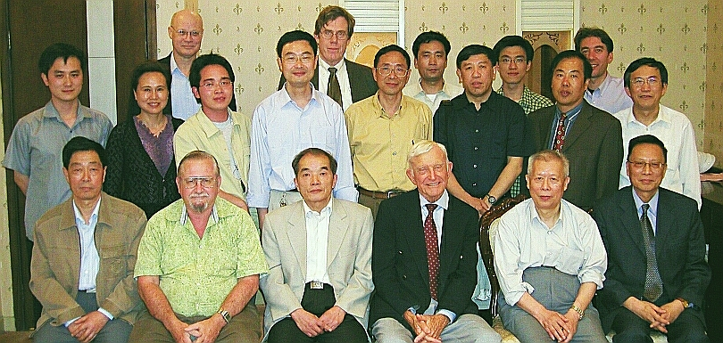

CHGIS was an international collaborative effort made up of research and technical teams, a management committee, and an advisory committee. The members who participated are recorded below.
Participating Institutions:
Management Committee:
Advisory Committee:
Russian Academy of Sciences Research Team:
Fudan Center for Historical Geography Research Team:
Participating Institutions:
Griffith University
Fudan University
Harvard University
Peking University
Russian Academy of Science
Management Committee:
- Peter K. Bol (Chair) [Harvard University]
- Jianxiong Ge [Fudan University]
- Mark Henderson [University of California, Berkeley]
- Bill Lavely [University of Washington]
- Zhimin Man [Fudan University]
- G. William Skinner [University of California, Davis]
- Xiaofeng Tang [Peking University]
Advisory Committee:
- Shuming Bao [University of Michigan, Ann Arbor]
- Merrick Lex Berman (Project Manager)[Harvard University, Cambridge]
- Peter K. Bol (Chair) [Harvard University, Cambridge]
- Lawrence Crissman [Griffith University, Brisbane]
- Kenneth Dean [McGill University, Montreal]
- Mark Elvin [Griffith University, Brisbane]
- Jianxiong Ge [Fudan University, Shanghai]
- Thomas Hahn [Cornell University, Ithaca]
- Mark Henderson [University of California, Berkeley]
- Lewis Lancaster [University of California, Berkeley]
- William Lavely [University of Washington, Seattle]
- Karl Longstreth [University of Michigan, Ann Arbor]
- Zhimin Man [Fudan University]
- Robert Marks [Whittier College]
- Yoshinobu Shiba [Toyo Bunko, Tokyo]
- Kee Long So [Chinese University of Hong Kong]
- Pierre Etienne Will [College de France, Paris]
- Eric Yen [Academia Sinica, Taipei]
- Yilin Zou [Fudan University, Shanghai]
Russian Academy of Sciences Research Team:
- Aleksei Karimov [Institute for the History of Science and Technology, Moscow]
- Irina Merzliakova [Institute of Geography, Moscow]
Fudan Center for Historical Geography Research Team:
- Jiangxiong Ge (Project Director) 葛剑雄
- Zhimin Man (Project Manager) 满志敏
- Yilin Zou (Research Team Leader) 邹逸麟
- Xiugui Zhang (Senior Editor) 张修桂
- Wenchu Wang (Senior Editor) 王文楚
- Yongfu Zhao (Senior Editor) 赵永复
- Linshu Qian (Senior Editor)钱林书
- Linxiang Fu (Editor) 傅林祥
- Weidong Lu (Editor) 路伟东
- Tao Sun (Technical Editor) 孙涛
- Peng Zuo (Editor) 左鹏
- Gang Meng (Editor) 孟刚
- Xiao Feng (Editor) 丰箫
- Weidong Wang (Editor) 王卫东
- Jiahua Wang (Editor) 王加华
- Xianliang Feng (Editor) 冯贤亮
- Jia Si (Editor) 司佳
- Chunyan Liu (Editor) 刘春燕
- Yuxue Ren (Editor) 任玉雪
- Yushang Li (Editor) 李玉尚
- Wei Yu (Editor) 余蔚
- Weizhong Chen (Editor) 陈为忠
- Lirong Zhang (Editor) 张丽蓉
- Juan Lin (Editor) 林涓
- Lei Zheng (Editor) 郑磊
- Hui Zhou (Editor) 周辉
- Xiaoyun Zhou (Editor) 周筱云
- Li Zhao (Editor) 赵力
- Yun Zhao (Editor) 赵赟
- Biheng Zhu (Editor) 祝碧衡
- Hong Guo (Editor) 郭红
- Zhonghuai Huang (Editor) 黄忠怀
- Ning Chang (Editor) 常宁
- Feng Sheng (Editor) 盛丰
